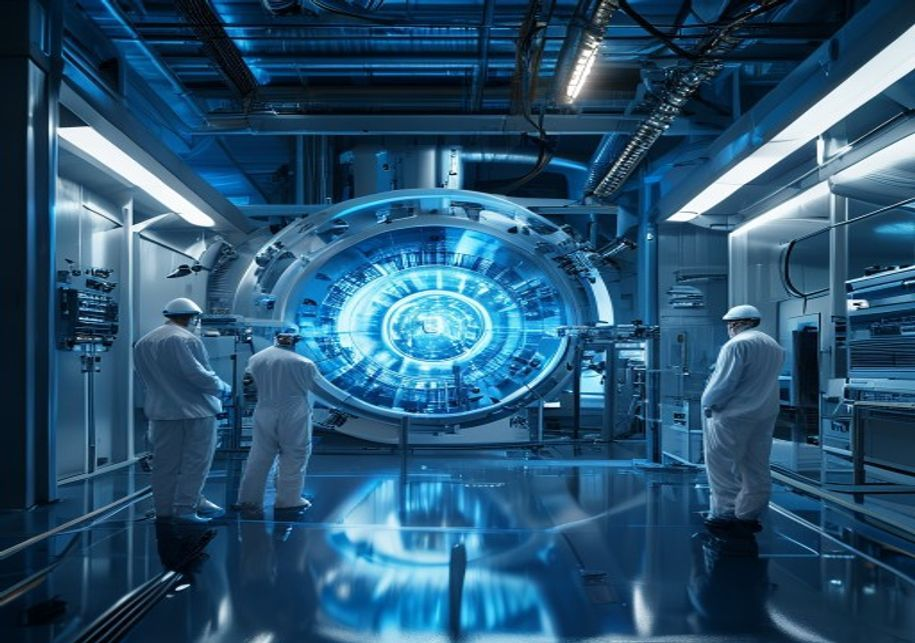
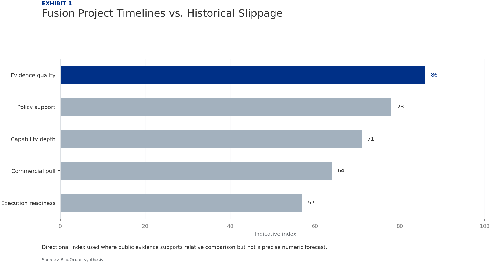
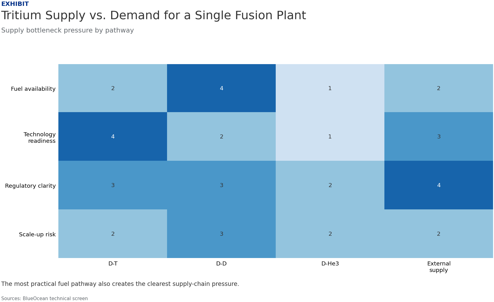
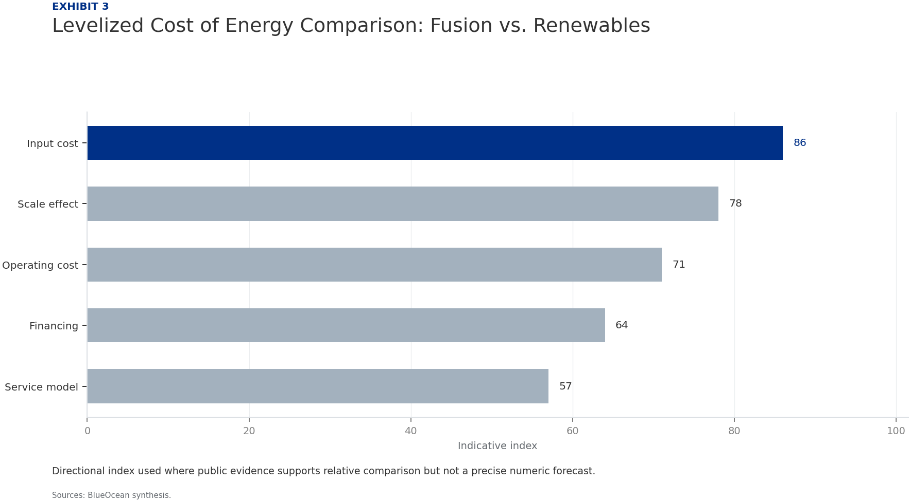

Nuclear Fusion Commercialization: Strategic Outlook and Implications for Energy Markets
The research narrows the agenda to a few high-conviction issues
Fusion commercialization is at least 15-25 years away from grid-scale deployment; no verified data supports earlier timelines.
Tritium supply is a critical bottleneck: current global production is about 0.5 kg/year, while a single plant may require 0.1-0.2 kg/day.
Fusion's levelized cost of energy is highly uncertain but likely higher than renewables for the foreseeable future; no verified cost data exists.
Regulatory frameworks for fusion are nascent; no licenses have been issued, and uncertainty could delay deployment by 5-10 years.
Investment in fusion is growing rapidly ($2.8 billion in 2022) but carries high risk; no startup has yet demonstrated net energy gain at scale.
The CEO-level question is not whether Nuclear fusion commercialization outlook and strategic implications is interesting, but which decisions can be made now inside the public-evidence boundary.
Actions are sequenced by evidence gates and decision readiness
Fusion Commercialization Is Advancing but Remains a Decade or More Away from Grid-Scale Deployment
Nuclear fusion has long been hailed as the holy grail of clean energy, offering the promise of virtually limitless, carbon-free power. In recent years, significant progress has been made by both public and private projects, with several achieving key milestones in plasma confinement and net energy gain. However, the path to commercial deployment is fraught with technical, economic, and regulatory challenges that will likely delay grid-scale fusion until at least 2040-2050.
Leading projects such as ITER, SPARC, and DEMO have published roadmaps that indicate first power in the 2030s at the earliest, but these timelines have historically slipped. Private ventures like Helion Energy and Commonwealth Fusion Systems are more optimistic, targeting 2028-2030 for first power, but they face significant engineering hurdles, including materials degradation, tritium breeding, and plasma stability. The gap between demonstration and commercial viability remains wide.
For executives, the key takeaway is that fusion is not a near-term solution. It will not impact energy markets or decarbonization targets in the next 15 years. However, the long-term potential is too significant to ignore. Companies should begin strategic positioning now, but with phased, low-commitment investments that allow for flexibility as technology and regulatory landscapes evolve.
Leading Fusion Projects Show Promising Milestones but Face Persistent Engineering and Materials Challenges
The fusion landscape is diverse, with multiple approaches competing for dominance. Tokamaks (e.g., ITER, SPARC) are the most mature, using magnetic confinement to contain plasma. Stellarators (e.g., Wendelstein 7-X) offer better stability but are more complex. Inertial confinement (e.g., National Ignition Facility) achieved net energy gain in 2022 but is far from commercial. Alternative concepts like field-reversed configurations (Helion) and linear devices (TAE Technologies) promise smaller, cheaper reactors but are less proven.
Key milestones include ITER's first plasma (now delayed to 2035), SPARC's target of net energy gain by 2025-2030, and DEMO's goal of electricity generation in the 2040s. Private ventures have raised billions but have not yet demonstrated sustained net energy gain. Critical challenges remain: plasma confinement at high temperatures, materials that can withstand neutron bombardment, and tritium breeding to ensure fuel self-sufficiency.
For investors and strategic planners, the diversity of approaches is both a strength and a weakness. It increases the chances of eventual success but also fragments investment and slows progress. The most promising approaches are those that combine strong scientific foundations with clear commercialization roadmaps and adequate funding. Companies should monitor progress across all approaches but focus on those with the most credible paths to grid-scale deployment.

Economic Viability of Fusion Will Depend on Cost Reductions and Regulatory Streamlining, Not Just Technical Success
Even if fusion achieves technical success, its economic viability is far from guaranteed. Projections for the levelized cost of energy (LCOE) from fusion range widely, from $50-100/MWh for mature plants (post-2050) to over $200/MWh for first-of-a-kind plants. In comparison, solar and wind LCOE are already below $30/MWh in many regions, and battery storage costs are falling rapidly. Fusion's high capital costs and long construction times make it difficult to compete on cost alone.
Regulatory frameworks for fusion are still nascent. The US Nuclear Regulatory Commission is developing a framework, but no licenses have been issued. The UK and EU are also working on regulatory pathways, but uncertainty could delay deployment by 5-10 years. Streamlined licensing that recognizes fusion's safety advantages (no meltdown risk, low waste) will be critical to reducing costs and timelines.
For executives, the economic case for fusion rests on its ability to provide firm, dispatchable, carbon-free power that complements intermittent renewables. In markets with high decarbonization targets and limited renewable potential, fusion could command a premium. However, falling battery storage costs could erode even that niche. Companies should model fusion's value in their specific markets and regulatory environments, and engage with regulators to shape favorable licensing frameworks.
Fusion Could Reshape Energy Markets by Providing Firm, Carbon-Free Baseload Power, but Competition from Renewables and Storage Is Intense
Fusion's unique value proposition is its ability to provide continuous, carbon-free power at scale, without the intermittency of solar and wind or the waste concerns of fission. This could make it a cornerstone of deep decarbonization, particularly for hard-to-abate sectors like heavy industry and data centers. However, the rapid decline in renewable and storage costs is narrowing the window for fusion's competitive advantage.
In electricity grids, fusion could serve as baseload power, reducing the need for fossil fuel backup and long-duration storage. But if battery costs continue to fall, a renewables-plus-storage system could meet most grid needs at lower cost. Fusion's role may be limited to regions with poor renewable resources or high land costs, or to applications requiring very high reliability.
For energy companies, the strategic implication is clear: do not bet on fusion as the sole solution. Invest in a diversified portfolio of renewables, storage, and other clean technologies, while preparing for fusion's potential long-term role. Monitor the cost trajectory of renewables and storage closely, as it will determine fusion's market opportunity.
Geopolitical Implications Include Reduced Dependence on Fossil Fuel Exporters and New Supply Chain Dependencies for Tritium and Advanced Materials
Fusion has the potential to reshape global energy geopolitics by reducing dependence on fossil fuel exporters and providing energy independence to nations with fusion technology. Countries with advanced fusion programs—such as the US, China, the UK, and the EU—could become energy exporters, while fossil fuel-dependent nations face long-term risk. However, fusion also creates new supply chain dependencies for tritium, lithium, beryllium, and niobium-tin, which are currently produced in a limited number of countries.
Tritium is a particularly critical bottleneck. Current global production is about 0.5 kg/year, mainly from CANDU reactors, while a single fusion plant may require 0.1-0.2 kg/day. Breeding blankets are not yet demonstrated at scale, and alternative fuel cycles (e.g., deuterium-deuterium) are less efficient. Lithium-6 is also needed for tritium breeding, and its supply is concentrated in a few countries.
For executives, the geopolitical implications are twofold: fusion offers a hedge against fossil fuel price volatility and supply disruptions, but it also introduces new risks. Companies should diversify their supply chains for critical materials, invest in recycling technologies, and consider strategic partnerships with leading fusion nations. Governments should support domestic tritium production and materials research to reduce vulnerabilities.
Investment in Fusion Is Growing Rapidly but Carries High Risk; Strategic Positioning Requires Monitoring Key Technical and Regulatory Milestones
Private fusion investment has surged in recent years, reaching $2.8 billion in 2022, with major investors including Bill Gates, Jeff Bezos, and venture capital firms. Public funding has also increased, with governments in the US, UK, EU, China, and Japan committing billions to fusion R&D. However, no fusion startup has yet demonstrated net energy gain at scale, and the path to commercialization remains uncertain.
Valuations of fusion startups are high relative to their technical maturity, reflecting optimism about the technology's potential. But the risk of failure is significant, and many startups may not survive the long development timeline. Investors should use phased commitments, tying further funding to specific milestones such as net energy gain, regulatory approval, and cost reduction targets.
For strategic planners, the key is to balance early-mover advantages with financial prudence. Early movers in fusion supply chains, site preparation, and regulatory engagement may gain significant advantages if fusion succeeds. But overcommitting too early could lead to losses if technology or market conditions change. A wait-and-see approach, combined with monitoring of key milestones, is prudent for most organizations.
Evidence page

Evidence page

Evidence page
